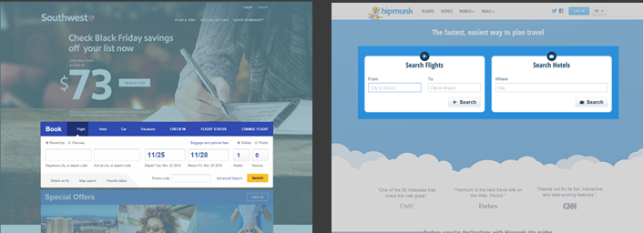
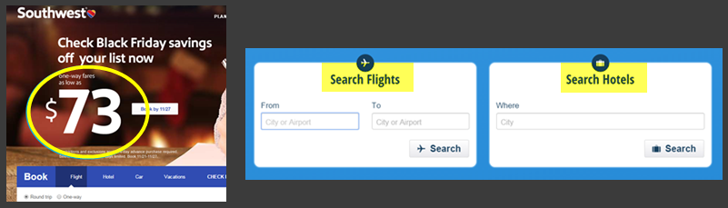
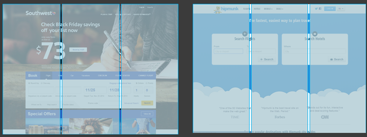
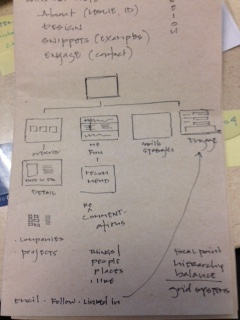

Hipmunk and Southwest both use a significant amount of negative space, though the treatment of the space does differ.
The negative space in Southwest's homepage includes an image, one that is seasonally appropriate and ostensibly will change to reflect the primary motivating reasons people visit the site.
On Hipmunk, negative space is used to convey a sense of travel- air travel, specifically. And the focal points, or calls to action, appear to float on the background.
In the case of Southwest, the focal point is created by the size of the call to action (book a ticket home for $73 just in time for the holidays) is so large as to draw the eye directly to the element, even if the user was looking for the more universal call to action- the booking elements.
In the case of Hipmunk, the size of the primary two calls to action make up a significant chunk of the prime focal space, with a combination of negative space within the controls and the large font creating a great focal point.
The balance of both sites falls nicely with horizontal centering within a vertical grid. While the content overflows the two, it is nicely balanced.
The vertical balance differs slightly between the two sites. If Hipmunk is divided by a four row grid, the majority of the top and bottom sections have light content, but the main focal point is anchored at the bottom of the first section, which draws the eye to a hierarchy from top to bottom.
Southwest tends more towards a balance of thirds, with a contextual focus weighted towards the top half of the site, and the primary anchored to the top of the bottom half.
The two sites share many design similarities, particularly in their sparse approach as a way of highlighting the primary actions. Both also do a nice job in their flow, once the user interacts with the controls. SW has a left to right flow and hierarchy. Hipmunk uses a left, down, right, or the N, pattern. Hipmunk also uses progressive disclosure nicely to keep the interface clean and focused, but deliver a functionally appropriate experience.

I've created 8 thumbnails, with roughly two of each type, though the middle four could be used for each other. These started out as a sketches on mini-post its, which is how I often do initial takes on design. Their tiny size allows me to care less about the details and think in broader strokes.
Then, I started to create in Balsamiq, though first I created a very rough outline and sitemap of what I wanted.

The four types of pages I created include–
The landing pages both feature a clear identity and navigational structure. They differ in their visual representation of work, primarily. The first page would use a blurred background image with an overlayed graphic sticky object that presents basic information about me. Small blocks of text below highlight some of the most pertinent information.
The second landing page tries for a more playful approach, where each visual object might represent a type of project and their statuses would be represented by either an image and title in the circle, or an x with more to come kind of representation.
The case studies pages are designed to represent a pivoted view of projects and experience, perhaps with a focus on companies for whom I have worked. They provide a quick higher level of commentary and an easy drill down into more details of the work. Ideally, it would easy to toggle between this view and work detail.
Both pages are anchored with a logo in the upper left. One relies on left nav and the other, a more whimsical center focused representation. They do not present the same level of information, however. The second one also has a sticky banner that could change depending on the navigation through the site.
The work details pages present two different paradigms. One is a drilldown, presenting details of only one selected project at a time, requiring the user to navigate back to the landing page or case studies, for example. The other, a more classic carousel based representation. Both have their strengths for presenting information, though the navigation is better in the carousel, and not so thoroughly thought out in the detailed view. The detailed view has a nice visual touch, putting the focus on a representation of the project, a quick summar of key details, then additional details. I have also included a few social media options here, that would ideally appeal to people if they thought my work was worth sharing.
The contact pages are very similar, with the intended focus on the contact fields. What differs, primarily, is the orientation of the other contact links, like social media, which may prove to be a distraction. The second design is much simpler, much more negative space. And could, without proper color and font, look properly boring and uninviting, with such a stark design.